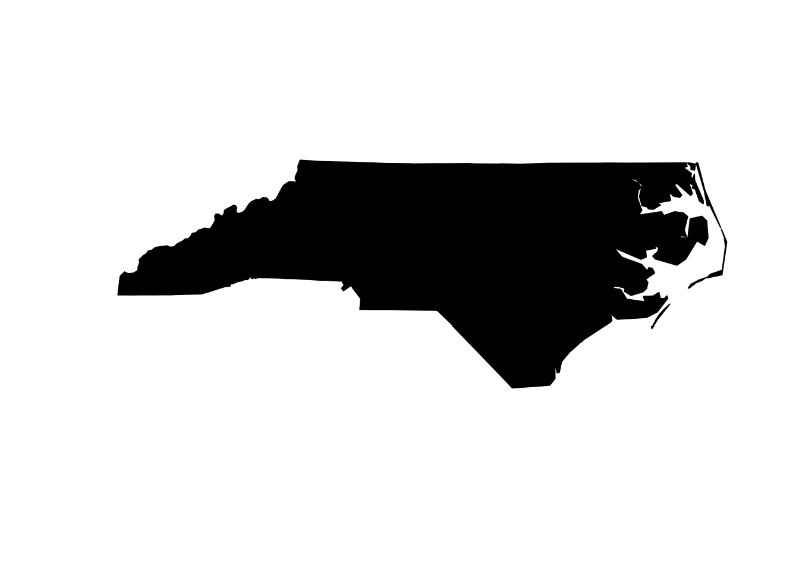
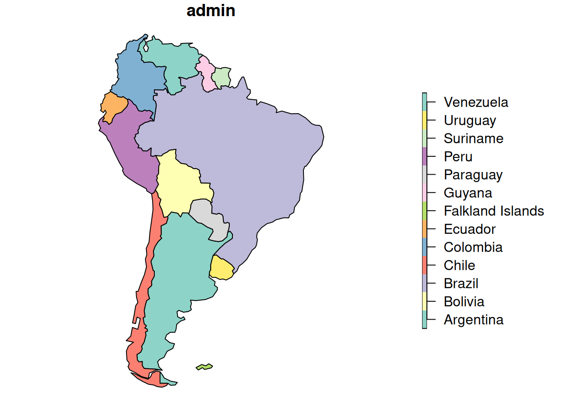
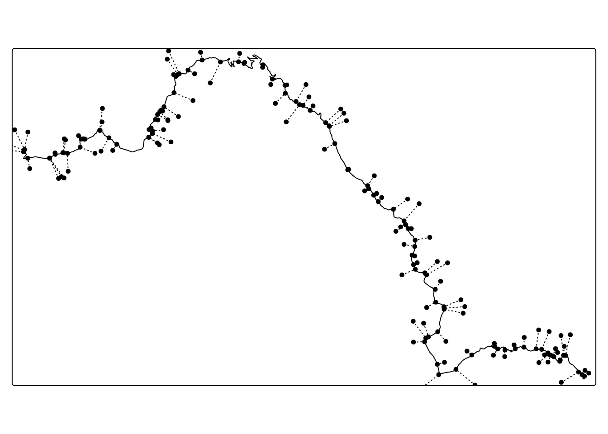

st_negative <- function(x, dist = 0){
st_buffer(x, dist = dist) |>
st_bbox() |>
st_as_sfc() |>
st_difference(x)
}2 R Spatial
(sf, terra, tmap)
2.0.1 Default startup options
These options could be included in rprofile or the like:
options(sf_max.plot = 1) # only plots the first column of sf objects
if(require(tmap))tmap_options(basemaps = "https://{s}.tile.openstreetmap.org/{z}/{x}/{y}.png") # only uses openstreetmap for the default basemap2.1 Set relation_to_geometry attribute of an sf object
attribute variables are assumed to be spatially constant throughout all geometrieslike so:
st_agr(x) = "constant"
st_agr(y) = "constant"2.1.1 Misc
- get linked software versions:
sf::sf_extSoftVersion()
2.1.2 Get the “negative” of a polygon
I usually want this for visualisation purposes
library(sf)Linking to GEOS 3.12.2, GDAL 3.11.3, PROJ 9.4.1; sf_use_s2() is TRUEnc <- read_sf(system.file("shape/nc.shp",package="sf")) |>
st_union()
nc |> st_geometry() |> plot(col = 1)
st_negative(nc, 0) |> st_geometry() |> plot(col = 1)
2.1.3 Bounding box to polygon
2.1.3.1 Case 1
Assuming you have a bounding box as four numeric values, xmin, ymin, xmax, ymax.
The following function will turn this into a polygon:
llur2poly <- function(xmin, ymin, xmax, ymax){
c(1,2,1,4,3,4,3,2,1,2) |>
sapply(\(x)c(xmin, ymin, xmax, ymax)[x]) |>
matrix(ncol = 2, byrow = TRUE) |>
list() |>
st_polygon()
}or so:
llur2poly <- \(xmin,ymin,xmax,ymax, crs = 2056){
browser()
st_bbox(c(
xmin = xmin,
xmax = xmax,
ymin = ymin,
ymax = ymax
)) |>
st_as_sfc() |>
st_set_crs(crs)
}2.1.3.2 Case 2
assuming you have an object named towns:
st_as_sfc(st_bbox(towns))2.1.3.3 Terra ext to sf Polygon
ext(rastobj) |> vect() |> as("Spatial") |> st_as_sfc()2.1.4 Case 3 (Expanding the bounding box)
nc <- read_sf(system.file("shape/nc.shp",package="sf"))
b <- st_as_sfc(st_bbox(nc))
centroid = st_centroid(b)
b3 <- (b - centroid) * 1.1 + centroid
rbind(b,b3) |> st_sfc() |> plot()
2.1.5 sf’s example datasets
I’m always wondering what spatial vector example data is provided by the sf package. This is how you find out:
library(tidyr)
library(dplyr)
library(purrr)
library(sf)
sfs_sys_path <- system.file(package="sf")
files <- tibble(file = list.files(sfs_sys_path,"shp$|sqlite$|gpkg$", recursive = TRUE))
files <-
files |>
extract(file, "extension", "\\.(.+)$", remove = FALSE) |>
mutate(
layers = map(file, \(x) (st_layers(file.path(sfs_sys_path, x)))),
)
# this no longer works... fix this at some point!
# (it would be nice if sf's print method for st_layers were available as a df
# currently, the crs column is problematic)
files$crs <- map_chr(files$crs, \(x)x[[1]]$input)
knitr::kable(files)| file | extension | name | geometry_type | driver | features | fields | crs_name |
|---|---|---|---|---|---|---|---|
| gpkg/b_pump.gpkg | gpkg | b_pump | Point | GPKG | 1 | 1 | Transverse_Mercator |
| gpkg/buildings.gpkg | gpkg | buildings | Polygon | GPKG | 158 | 2 | Transverse_Mercator |
| gpkg/nc.gpkg | gpkg | nc.gpkg | Multi Polygon | GPKG | 100 | 14 | NAD27 |
| gpkg/nospatial.gpkg | gpkg | nospatial | NA | GPKG | 1 | 2 | NA |
| gpkg/tl.gpkg | gpkg | tl_2016_us_state | Polygon | GPKG | 1 | 1 | NAD83 |
| shape/nc.shp | shp | nc | Polygon | ESRI Shapefile | 100 | 14 | NAD27 |
| shape/olinda1.shp | shp | olinda1 | Polygon | ESRI Shapefile | 470 | 6 | GRS 1980(IUGG, 1980) |
| shape/storms_xyz_feature.shp | shp | storms_xyz_feature | 3D Line String | ESRI Shapefile | 71 | 1 | NA |
| shape/storms_xyz.shp | shp | storms_xyz | 3D Line String | ESRI Shapefile | 71 | 0 | NA |
| shape/storms_xyzm_feature.shp | shp | storms_xyzm_feature | Measured Line String | ESRI Shapefile | 71 | 1 | NA |
| shape/storms_xyzm.shp | shp | storms_xyzm | Measured Line String | ESRI Shapefile | 71 | 0 | NA |
| sqlite/b.sqlite | sqlite | a.sqlite | Point | SQLite | 1 | 2 | NA |
| sqlite/meuse.sqlite | sqlite | meuse.sqlite | Point | SQLite | 155 | 12 | Amersfoort / RD New |
| sqlite/nc.sqlite | sqlite | nc.sqlite | Multi Polygon | SQLite | 100 | 14 | NAD27 |
| sqlite/test3.sqlite | sqlite | Towns | Point | SQLite | 8101 | 5 | WGS 84 / UTM zone 32N |
| sqlite/test3.sqlite | sqlite | HighWays | Point | SQLite | 10 | 2 | WGS 84 / UTM zone 32N |
| sqlite/test3.sqlite | sqlite | Regions | Point | SQLite | 10 | 2 | WGS 84 / UTM zone 32N |
To import a file
read_sf(system.file("sqlite/test3.sqlite",package="sf")) Warning in CPL_read_ogr(dsn, layer, query, as.character(options), quiet, :
automatically selected the first layer in a data source containing more than
one.Simple feature collection with 8101 features and 5 fields
Geometry type: POINT
Dimension: XY
Bounding box: xmin: 319224 ymin: 3934674 xmax: 1308585 ymax: 5214373
Projected CRS: WGS 84 / UTM zone 32N
# A tibble: 8,101 × 6
Name Peoples LocalCounc County Region Geometry
<chr> <int> <int> <int> <int> <POINT [m]>
1 Brozolo 435 1 0 0 (427002.8 4996361)
2 Campiglione-Fenile 1284 1 0 0 (367470.5 4962414)
3 Canischio 274 1 0 0 (390084.1 5025552)
4 Cavagnolo 2281 1 0 0 (425247 5000248)
5 Magliano Alfieri 1674 1 0 0 (426418.9 4957737)
6 Mango 1334 1 0 0 (432661.5 4948470)
7 Manta 3363 1 0 0 (379960.2 4941389)
8 Marene 2703 1 0 0 (399494 4946145)
9 Margarita 1297 1 0 0 (395282.6 4917524)
10 Martiniana Po 667 1 0 0 (370131.2 4942846)
# ℹ 8,091 more rowsread_sf(system.file("sqlite/test3.sqlite",package="sf"), "Towns") # more specificSimple feature collection with 8101 features and 5 fields
Geometry type: POINT
Dimension: XY
Bounding box: xmin: 319224 ymin: 3934674 xmax: 1308585 ymax: 5214373
Projected CRS: WGS 84 / UTM zone 32N
# A tibble: 8,101 × 6
Name Peoples LocalCounc County Region Geometry
<chr> <int> <int> <int> <int> <POINT [m]>
1 Brozolo 435 1 0 0 (427002.8 4996361)
2 Campiglione-Fenile 1284 1 0 0 (367470.5 4962414)
3 Canischio 274 1 0 0 (390084.1 5025552)
4 Cavagnolo 2281 1 0 0 (425247 5000248)
5 Magliano Alfieri 1674 1 0 0 (426418.9 4957737)
6 Mango 1334 1 0 0 (432661.5 4948470)
7 Manta 3363 1 0 0 (379960.2 4941389)
8 Marene 2703 1 0 0 (399494 4946145)
9 Margarita 1297 1 0 0 (395282.6 4917524)
10 Martiniana Po 667 1 0 0 (370131.2 4942846)
# ℹ 8,091 more rows2.1.6 Country Borders
RNaturalEarth has many worldwide datasets to use:
library(rnaturalearth)
southamerica <- ne_countries(returnclass="sf", continent = "South America")
plot(southamerica["admin"])

2.1.7 Erase
https://github.com/r-spatial/sf/issues/346#issuecomment-302046063
st_erase = function(x, y) st_difference(x, st_union(st_combine(y)))2.1.8 Cast POINT to LINESTRING
When casting points to linestring with group_by() |> summarise() |> st_cast("LINESTRING") I need to pass the option do_union = FALSE to summarise(), otherwise the order of the points is not preserved (see my GitHub issue on this).
2.1.9 Creating Simple Feature Geometries
2.1.9.1 From simple vectors
From time to time, I need to create simple feature geometries out of thin air. Each type of simple feature requires a specific data type. They could be inferred (since they make a lot of sense) but I’m lazy, hence the documentation here:
Todo:
st_point(c(0, 0))POINT (0 0)st_multipoint(matrix(c(0, 0, 1, 1), ncol = 2, byrow = TRUE))MULTIPOINT ((0 0), (1 1))st_linestring(matrix(c(0, 0, 1, 1), ncol = 2, byrow = TRUE))LINESTRING (0 0, 1 1)st_multilinestring(
list(
matrix(c(0, 0, 1, 1), ncol = 2, byrow = TRUE),
matrix(c(0, 1, 1, 0), ncol = 2, byrow = TRUE)
)
)MULTILINESTRING ((0 0, 1 1), (0 1, 1 0))st_polygon(
list(
matrix(
# OGC Simple feature: exterior ring is counter clockwise
c(
0, 0,
1, 0,
1, 1,
0, 1,
0, 0
),
ncol = 2, byrow = TRUE
)
)
) POLYGON ((0 0, 1 0, 1 1, 0 1, 0 0))st_polygon(
list(
matrix(
c(
0, 0,
1, 0,
1, 1,
0, 1,
0, 0
),
ncol = 2, byrow = TRUE
),
# OGC Simple feature: interior ring is clockwise
matrix(
c(
0.25,0.25,
0.25,0.75,
0.75,0.75,
0.75,0.25,
0.25,0.25
),
ncol = 2, byrow = TRUE
)
)
)POLYGON ((0 0, 1 0, 1 1, 0 1, 0 0), (0.25 0.25, 0.25 0.75, 0.75 0.75, 0.75 0.25, 0.25 0.25))2.1.9.2 from data.frame columns
Sometimes recive geodata stored in columns of a data.frame. Mostly, these are point objects, which can be converted to a geometry using the following code:
df |>
# note the order: lon - lat, which is x, y !
st_as_sf(coords = c("lon","lat"),crs = 4326)Rarely, they are lines (tipically origin - destination):
df |>
mutate(geom = pmap(list(start_lon,start_lat, end_lon,end_lat), \(x1, y1, x2, y2) st_linestring(matrix(c(x1, y1, x2, y2), ncol = 2, byrow = TRUE)))) |>
st_sf(crs = 4326) 2.1.10 Working with a list of layers
Both ggplot2 and tmap work with the layers and + idiom. Using functional programming I can create a list of layers and concatenate them all with Reduce. This is a practical method when, e.g. I have a single sf object but want to selectively activate / deactivate parts of that layer in tmap. To do this, I split the sf object into a list of obects, create a tmap layer for each object and then concatenate them as described. E.g. take the buildings dataset from the sf package.
buildings <- read_sf(system.file("gpkg/buildings.gpkg",package="sf"))
# say we want to selectively activate / deactivate a column named `cat_fac`
buildings$cat_fac <- cut(buildings$cat, seq(0,ceiling(max(buildings$cat)/20)*20,20))
# this is how it looks
ggplot(buildings) + geom_sf(aes(fill = cat_fac))
buildings |>
(\(x)split(x, x$cat_fac))() |>
imap(\(x,y)tm_shape(x,name = y) + tm_polygons(col = "red")) |>
Reduce("+", x = _)
2.1.11 Tmap V4
The new API takes a bit getting used to. Here is how to change the color palette to Spectral:
tm_shape(myrast) +
tm_raster(col.scale = tm_scale_continuous(values = cols4all::c4a(palette = "-Spectral")))2.1.12 Download swissAlti3D tiles with custom extent
https://gist.github.com/ratnanil/83d4cd439300e18b7666e4efde59ddf2
2.1.13 Map Matching
library(sf)
library(tmap)
HighWays <- read_sf(system.file("sqlite/test3.sqlite",package="sf"), "HighWays")[6, ]
# since we want to find the closest location on the road over ALL roads
# we need to create a union of the roads first.
HighWays <- st_union(HighWays)
# Let's simulate 1000 GPS locations within 3km of the highway
gps_locations <- HighWays |> st_buffer(3000) |> st_sample(100)
# Now we can get the nearset point for each GPS location
nearest <- st_nearest_points(gps_locations, HighWays)
# The output is a line for each point (see plot below)
# Now we need convert the output from LINE to POINT
near_p <- st_cast(nearest, "POINT")
# now we subset the points. Uneven numbers are the original
# points, even numbers are the new, mapmatched points.
near_from <- near_p[c(TRUE, FALSE)]
near_to <- near_p[c(FALSE,TRUE)]
tm_shape(HighWays) + tm_lines() +
tm_shape(nearest) + tm_lines(lty = 3) +
tm_shape(near_from) + tm_dots() +
tm_shape(near_to) + tm_dots(col = "red")

2.1.14 data.frame method for sf_layers-object
The function st_layers() returns an sf_layers object, which is basically a list that could easily be coerced to a data.frame. This is not possible by default, I first have to create a new method for a generic from another package (from here).
I created an issue for this: https://github.com/r-spatial/sf/issues/2412
# OUTDATED??
as.data.frame.sf_layers <- \(x) sf:::print.sf_layers(x) |> data.frame()
as_tibble.sf_layers <- \(x) as_tibble(as.data.frame(x)) # optional, creates an as_tibble method
# test this on an sqlite dataset:
layers <- st_layers(system.file("sqlite/test3.sqlite",package="sf"))
as.data.frame(layers)
as_tibble(layers)2.2 terra
2.2.1 Datatypes
From here
| Data type | Minimum value | Maximum value |
|---|---|---|
| INT1U | 0 | 255 |
| INT2S | -32,767 | 32,767 |
| INT2U | 0 | 65,534 |
| INT4S | -2,147,483,647 | 2,147,483,647 |
| INT4U | 0 | 4,294,967,296 |
| FLT4S | -3.4e+38 | 3.4e+38 |
| FLT8S | -1.7e+308 | 1.7e+308 |
2.2.2 Rasterize a vector dataset
zg <- st_read("https://api3.geo.admin.ch/rest/services/api/MapServer/ch.swisstopo.swissboundaries3d-kanton-flaeche.fill/9?geometryFormat=geojson&sr=4326")
zg <- st_transform(zg, 2056)
# 1. Create a template.
# The extent could come from a different object
template <- rast(res = 1000, crs = crs(zg), extent = ext(zg))
zg_ras <- rasterize(zg, template, field = 1)
plot(zg_ras)